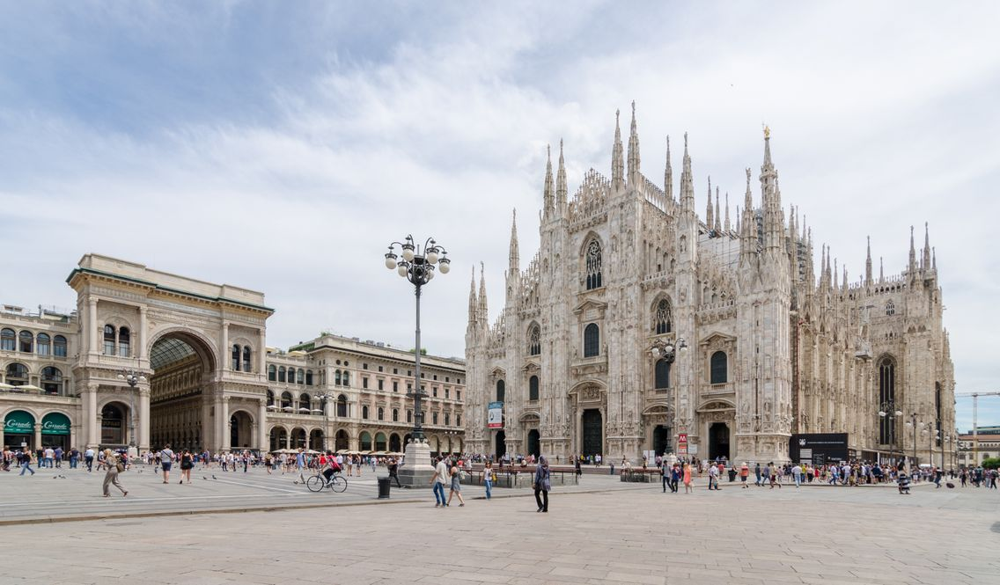
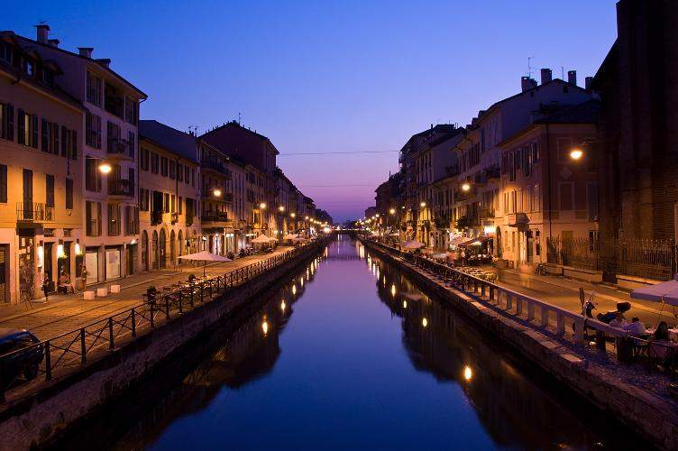
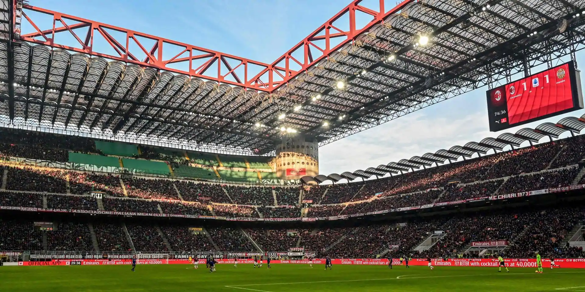

En Italien, celle-ci se nomme « piazza del Duomo« . En fait, il s’agit du cœur historique de Milan, et en est un des lieux les plus emblématiques : en effet, c’est là qu’on retrouve la plupart des monuments les plus célèbres de la ville, comme le Palais Royal, un superbe bâtiment du XVIII° siècle et qui fait aujourd’hui office de centre d’exposition artistique. Les rues adjacentes qui vous mèneront jusqu’à la place valent le coup d’œil, notamment en soirée, avec leurs luminaires majestueux et les succulents restaurants et cafés typiquement italiens.
Un réseau de canaux, en partie conçus par Léonard de Vinci, s’étirait autrefois de partout dans Milan, mais de nos jours les Navigli se limitent à deux longs canaux : Naviglio Grande et Naviglio Pavese, dans le sud de la ville. Charmante alternative au centre obsédé par la mode, les canaux ont un style plus bohème et sont bordés de cafés, boutiques vintage et de galerie éphémères. Une brocante populaire se tient sur le Naviglio Grande, le dernier dimanche de chaque mois. Bien sûr, on est loin des canaux de Venise ou d’Amsterdam mais ces deux là méritent une petite balade.
Si vous êtes assez chanceux pour être en ville lorsque l’AC Milan joue à domicile, faites en sorte de vous procurer des places ! L’ambiance dans le stade est incroyable, et vous aurez l’occasion de voir jouer l’une des équipes les plus titrées et plus mythiques d’Europe, rien que ça. Si le Milan AC joue à l’extérieur, vous pourrez aller voir l’Inter Milan, qui est elle aussi une grande équipe
